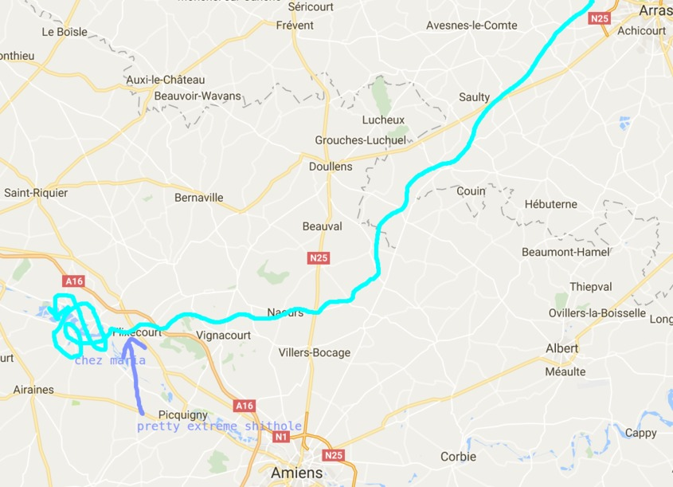
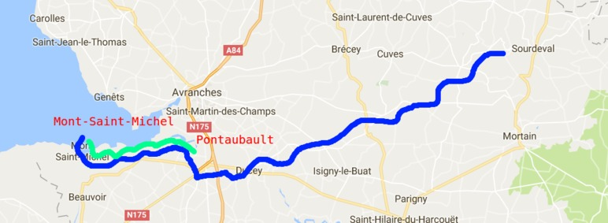
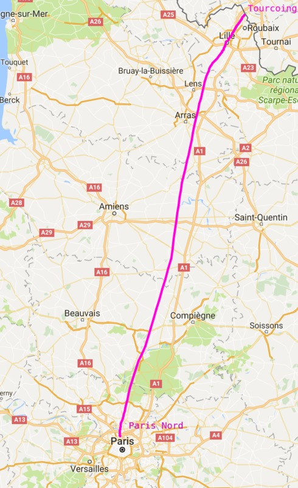

|
VUILBAK VUILBAK GO VUILBAK info |
How to go to Mont-Saint-Michel by bicycle with a small reptile from Australia and a middle-sized primate from south-eastern Asia, who are constantly thinking you're a stupid positive loser and you break everything you touchIntroductionFirst of all, this walkthrough is quite a bit harder than the Stonehenge experience, if you're a novice you better start with that one ( How to get to Stonehenge for free). This tutorial/walkthrough involves cycling, swimming, wildcamping, floods, sheep, bulls, kestrels, French cheese, dangerous gases, extreme crowded tourism, shithole cities, shithole places in general, small and medium-sized supermarkets, trains, trains at great speed, huge cities, menace of terrorism, a shitload of coffee, costly beer, regional products, cidre, shitsongs, singing, rain, wind, french language, onion soup, drunk french people, jokes about mass murderers, non-standard dutch language and medium-sized ugly cities (shitholes), french and flemish rivers and duck chasers. The full tutorial/walkthrough takes about 11 to 14 days. 
What you'll need
Part 1: The Schelde
Part 1 & 2: The Schelde and the Scarpe It is recommended to start in Dikkelvenne (Gavere) and preferebly somewhere in the Hofkouterstraat (departure from other places may work as well but was not tested). Try to find the shelde river (L'Escaut) and start cycling south until you're in France. You can stop for some sugar bread in Herkijn and drink a coffee there also. Later it is recommended to pause in Tournai (Doornik) as well for a nice beer (there's a pub at the Schelde with Saison Dupont from the barrel. Keep following the Schelde river at the left side and a nice camping spot will appear. There is unlimited food (Maize) and a lot of birds. There you can also find some hop to spice up your beer. Be prepared for some tyre fixing as chances are huge that the reptile doesn't have decent new tyres on his bicycle. Part 2: The ScarpeAs you get into France via the Schelde river, you will notice a small village where two rivers flow together. This is the confluence of the Scarpe and the Schelde. Here you can encounter your first Bar-Tabac, a French feature that will become a very important aspect in this walkthrough. It is suggested that you order three cafés, ask the dude at the bar to fill up your drinking bottles with fresh water and than leave the shithole as quick as possible and start following the Scarpe river. You keep cycling to the West and fix the reptile's tyres two times. When you pass Douai you better stop in the Leclerc supermarket and buy some new tyres (Yes they sell tyres for racebikes in French super markets). Replace the tyres and keep the old ones as spare tyres for when in need. Eat some Camembert and bread, leave the shithole where you stranded and head for Arras. In Arras, you can go to the Irish pub on the great market. You order some white beer and go to the toilet. Inside you will notice the exreme shitty music, try to ignore it or the sentence "I'm fucking ready to die" will be stuck in your head. Shitsongitis, a disease marked by the incontrollable inclination to sing shitty songs, often with made up and improvised lyrics as well monotonous reptitive phrases, starts here. After chilling on the big market of Arras you head for a place to spend then night. There are mutiple options: 1) the golf court, 2) A small forest just outside Arras, 3) You search for a hostel, 4) You ask some French dude to sleep in his garden. I recommend the second option. Part 3: From Scarpe to SommePart 3 from the Scarpe to the Somme Now you head for the Somme river. You'll reach Picardie and will observe that more and more hills will appear. You'll curse yourself and get tired quite fast, but be cautious, because this is only the beginning! Beware of the city Flixecourt, which is a tremendous shithole. You can swim in the Somme river and this is highly recommended, however take care because getting out of the water is harder than it looks. Also this might not be appropriate when following this tutorial in other seasons than the summer. You can find a place to sleep around the countless lakes/ponds surrounding the Somme river. However you should beware of the duck chasers, who also hunt during the night. They will ask you for some alcohol and you should answer no. Enjoy the evening view of the lake and drink some soluble coffee, Tomorrow will be a heavy day. Part 4: To the sea, and beyond!
Part 4: to the sea and beyond! Today you will head for the seaside around Dieppe, another shithole. However the sea itself is very nice and serves as a good objective to do some heavy cycling today. This will be your first day in Normandie as well! You can start the day by taking the véloroute de la mémoire which will get you 20 kilometers further quite fast. You will notice that the hills get nastier and nastier when you get deeper into Normandie. Make sure you have some spare beans in tomato sauce because the reptile will soon crash and require some extra food. You can head for Foucarmont, however the supermarket will be closed which is rather funny because it's a detour you did to fetch food for the reptile. You'll notice that there is weird relationship with the U.S.A. as the town is full of stars and stripes. Ignore this, drink a coke and leave the shithole. A legendary downhill part is situaded just before Londinieres and here you will be able to get your speed record for this walkthrough. When you get to the sea, you can start looking for a place to sleep. Beware of steep hills when you try to cycle along the coast, it's pretty x-treme. It is suggested to go to Vagnencourt-sur-mer, put your stuff in a cowfield, go to the beach, notice that there is a bull in the field, get your stuff out of the field, make food on the beach (we suggest to make fire, roast some mushrooms and jak them in some melted Camembert cheese), try to sleep under a shelter on the beach , wake up in the middle of the night because it is storming, jak up the tent with stones, try to sleep in it, wake up the following day, notice the tent is quite wet and filthy and leave the place. Part 5: A shitty day
Part 5: a shitty day There is a bakery up hill, grab some croissants, drink some coffee, buy some water and leave the place. Today we start heading for Mont-Saint-Michel more directly! We're taking a lot of shitty roads today... Head for the Seine river in Duclair and take the ferry to cross it. You'll get in some lowlands where the first apple yards will appear. Don't be fooled, Normandie will get full of hills again when you proceed. Keep cycling till you can't handle the shittiness anymore and start looking for some nice woodlands to sleep. Enjoy some onion soup in the woods, hear lots of creepy noises and chill out in your hammocks. Tomorrow will be even tougher! Part 6: Rainy day, dream away in a bar tabac in Moyaux where a drunk French dude tries to converse with you but he's really quite drunk so it's hard
Part 6: rainy day Today it is raining really hard and the wind is also a mean fucker, but you'll manage to cycle quite a lot because you're able to focus on the real flandrien experience. You'll get extreme shitsongitis today which will last for the next days as well. Because the rain is so nasty, you should stop in Moyaux and try to dry. It is suggested to go to Bar-Tabac Bar des poètes. Chances are high however that there is no electricity. Beware of the drunk French guy next to you, who seems to be with his car. It is very hard to leave the place as the rain is not stopping. Keep cycling through Lisieux, which is an x-treme shithole (follow an elderly dude with a fluorescent jacket) to Saint-Pierre-Des-Dives, also a shithoe with a Casino supermarket. You will notice you get in a whole other region that feels a bit more like the south. Look for some woodlands to sleep in the neighbourhood of Sassy. The sun will become visible just when you stopped cycling and you feel happy. Part 7: Getting closer...
Part 7: getting closer Today you will get real close to Mont-Saint-Michel, so you can reach it the following day. It's just an ordinary day of cycling and shitsongitis. Stop in Clécy, fix your brakes and drink some coffee. Stop in Sourdeval, drink some grimbergen and find a place to sleep in some neighboring woodlands. Make some jokes about mass murderers, drink onion soup (again) and get some sleep. Part 8: To Mont-Saint-Michel, and beyond!Part 8: to Mont-Saint-Michel Woohoow, head for Mont-Saint-Michel! There is a nice véloroute which you can follow and you'll be there in no time. It is suggested to stop in Pontaubault for some coffee. Beware of the primate as he starts to nag about wanting a pizza. When you head to Mont-Saint-Michel from Pontaubault you'll notice they'd better call it Mont-Saint-Tantalus as the last kilometers feel endless. However when your there take a picture (or it didn't happen!) visit the place and chill out in the abbey. head back for Pontaubault, set up camp on the banks of the Sélune river, notice the flood, be unaware of the fact that your getting surrounded by water, leave the place in panic, leave some stuff, get on dry parts, when the water is flowing away, go and look for your stuff (the primate will have lost his shorts and knife but all other stuff can be retrieved). The reptile will be unhappy because his shoes are wet. Eat, drink, sleep, repeat. Part 9: To Paris! And beyond!
Part 9: to Paris
You wake up and get some coffee in Pontaubault, write your postcards that you've bought at Mont-Saint-Michel and
leave for Avranches. When you get to the station there is nobody in there. You wait and a friendly dude pops up. He
eplains you can't go to Paris from Avranches for a reasonable price. He suggests you go to Villedieu-les-Poeles and
take the train there. Hop on your bicycle and head for the shithole. Your accellerations will break and you will have
to do some hills by foot. No worries you will be there in time. The lady in the station is very friendly as well.
Buy your tickets, go to the café "Les Voyageurs", eat a sandwich with cheese (it's emmentaler) and drink some
Pel(i)forth beer. Hop on the train (around 3:20 pm). Hop of in Paris (Montparnasse), take your bike and get to the
other riverbank (be careful, cycling here is quite tricky, but you get used to it quickly). Go to the St-Christophers
inn in the Rue de Dunkirk. Get yourself a room and stroll in Paris till tomorrow night.
Part 10: Back to BelgiumPart 10: back to Belgium Get up real early (6 am) in the morning and take the train to Lille Europe from the Gare du Nord (very close to the hostel). Go to Lille flandres and take the train to Antwerp, get off in Tourcoing. Start cycling to the Leie river. You pass Moucron, Paradijs and some other villages. Paradijs is not so "Paradijselijk" as it smells like vomit there. The Leie is very nice. head for Kortrijk, drink beer, eat fries, buy some second hand books, play snooker and leave. Head for Deinze, a notorious shithole in East-Flanders, drink beer, say goodbye to your friends (you ditch them in Deinze) and head for Ghent. Congratulations you finished this walkthrough! |
Anime Wolken VUILBAK |

{kind=link}
{kind=link}